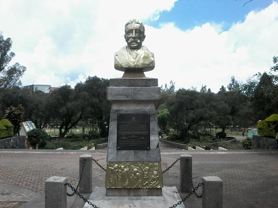

Baguio City is one of the most beautiful places you wouldn't want to miss. Not only for its cool weather that most people are interested in but also for its rich culture and beautiful sceneries. Just beside the center or "heart" of baguio is Burnham park, which is called by many as the "historic urban park" and "mother of all parks" is a beautiful wide park that contains different areas and sceneries. You can do almost everything in this park from strolling the sidewalks to having a picnic and even boating in burnham lake. There's something for everyone in burnham park.
Burnham park got its name from its architect Daniel Burnham who's the city planner of Baguio. He envisioned that a large modern park would be built within the city's heart and construction began in 1904. The original plans were designed to have a larger space than what was made but was made smaller due to buildings being constructed beside it and urbanization of the city. Fortunately most of the the original design and layout was followed and implimented
Burnham park has been proposed to be marked as a cultural heritage site in Baguio City. As of now, the government has not yet approved this proposal. This page aims to make that proposal become a reality and promote the preservation of the park. Burnham has existed since the early days of Baguio City which is why we call each and everyone of you to join us preserve and improve not only Burnham Park, but also all the cultural heritages we have inherited from the past generations.